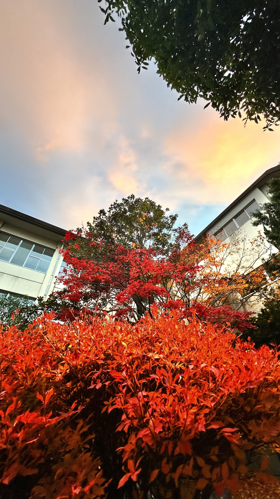

地元の景色
自分が京都TECHに入るまでに撮った地元の景色の写真のお気に入りです
地元の名産
1.万願寺甘とう
別名“とうがらしの王様”
果肉がぎっしり詰まったボリューム感のある大きさと独特のくびれ、
見た目がとてもユニークな京の伝統野菜「万願寺甘とう」は、
煮て良し・焼いて良し・揚げて良しの三拍子揃ったとうがらしです。(舞鶴市ホームページより)
2.まいづる海自カレー
舞鶴在籍の艦艇や部隊、学校の認定を受けた12種類の海上自衛隊オリジナルカレーのこと
自衛隊それぞれの組織の料理長が腕によりをかけたレシピを使い、
各店のスタッフが調理員から直接の指導を受け、
それぞれの組織の長から認定された後に提供されているのが特徴です。(京都府ホームページより)